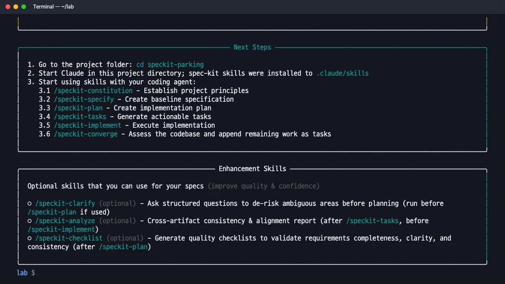
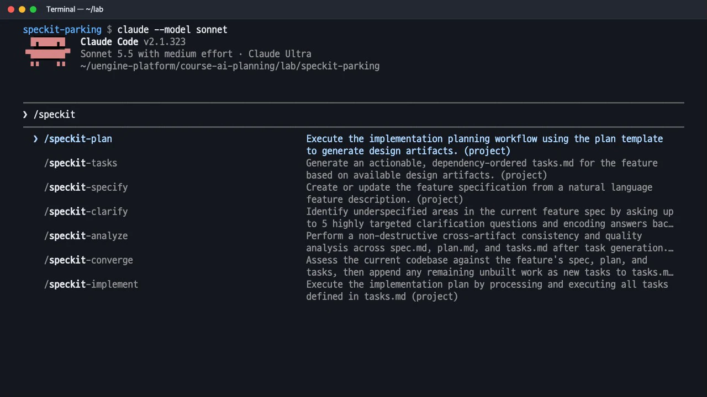

uv로 Specify CLI를 설치하고
specify init으로 실습 폴더를 만듭니다. Claude Code용 스킬 아홉 개와 템플릿·스크립트가 어디에 생기는지 확인하고, Claude Code를 열어/speckit명령 목록까지 봅니다.
이 장의 산출물 · GitHub
이 장이 끝났을 때의 파일이 공개 저장소 uengine-oss/tutorial-speckit-handson의 태그 step-02-setup에 있습니다. 본문의 파일 이름을 눌러도 해당 파일이 열립니다.
무엇을 · 왜#
Spec Kit은 두 부분으로 되어 있습니다.
| 부분 | 하는 일 | 어디서 쓰나 |
|---|---|---|
Specify CLI (specify) |
프로젝트에 템플릿·스크립트·에이전트용 명령을 설치합니다 | 터미널 |
스킬 (/speckit-specify 등) |
사양·계획·작업·구현을 실제로 진행합니다 | 에이전트 입력창(Claude Code) |
CLI는 처음 한 번 프로젝트를 준비할 때만 쓰고, 그 뒤의 일은 모두 Claude Code 안에서 합니다.
따라 하기#
- Specify CLI 설치. Spec Kit 1.x는 PyPI에 올라가 있어
uv tool install specify-cli한 줄이면 됩니다. 설치가 끝나면Installed 1 executable: specify가 나옵니다.specify version으로 버전(이 실습에서는 1.4.0)을 확인합니다.uv tool install specify-cli specify version - 프로젝트 만들기.
--integration claude를 지정하면 Claude Code용으로 준비합니다. 스크립트 종류를 묻는 창이 나오면 macOS·Linux는sh(기본값)를 고릅니다. 템플릿은 CLI 안에 들어 있어 네트워크 없이도 만들어집니다.specify init speckit-parking --integration claude cd speckit-parking && git init -q - 만들어진 것 둘러보기. 끝나면 「Next Steps」 상자에 다음에 쓸 스킬이 순서대로 나옵니다.
.claude/skills/아래에 스킬 아홉 개가,.specify/아래에 템플릿·스크립트·헌법 틀이 생깁니다.
specify init 이 끝난 뒤의 Next Steps 와 선택 스킬 안내 ls .claude/skills find .specify -type f | sort - Claude Code 열기. 실습 폴더에서
claude를 실행합니다. 처음 여는 폴더에서는 신뢰 확인 창이 나오며, 「Yes, I trust this folder」를 고릅니다. 입력창에/speckit까지 입력하면 프로젝트 스킬 목록이 나옵니다.
Claude Code 입력창에 /speckit 을 치면 뜨는 프로젝트 스킬 목록 claude --model sonnet
만들어지는 파일#
| 위치 | 내용 |
|---|---|
.claude/skills/speckit-*/SKILL.md |
스킬 아홉 개: constitution · specify · clarify · plan · checklist · tasks · analyze · implement · converge |
.specify/templates/ |
spec-template.md, plan-template.md, tasks-template.md, checklist-template.md, constitution-template.md |
.specify/scripts/bash/ |
기능 폴더를 만들고(create-new-feature.sh) 필요한 문서가 있는지 확인하는(check-prerequisites.sh) 스크립트 |
.specify/memory/constitution.md |
헌법. 처음에는 [PRINCIPLE_1_NAME] 같은 빈칸만 있는 틀입니다 |
.specify/init-options.json |
선택한 에이전트, 스크립트 종류(sh), 기능 번호 방식(sequential), 버전 |
.specify/workflows/speckit/workflow.yml |
specify → plan → tasks → implement를 한 번에 실행하는 워크플로 정의(이 교재에서는 단계별로 직접 실행) |
스킬 파일은 마크다운으로 된 작업 지침입니다. 예를 들어 speckit-clarify/SKILL.md에는 모호함을 찾는 열 가지 범주와 "질문은 최대 5개, 한 번에 하나씩" 같은 규칙이 그대로 적혀 있습니다. 5장에서 이 내용을 자세히 봅니다.
다른 글과 명령 모양이 다를 때
인터넷의 많은 글은 uvx --from git+https://github.com/github/spec-kit.git specify init과 /speckit.specify처럼 점(.)이 들어간 명령을 씁니다. 이 실습의 1.4.0은 uv tool install specify-cli로 설치하고, Claude Code에는 /speckit-specify처럼 하이픈으로 된 스킬로 설치됩니다. 에이전트마다 명령 형식이 다르므로 공식 문서의 「Command invocation」 표를 확인하세요.
이 실습의 권한 설정
원활한 녹화를 위해 .claude/settings.local.json에 Spec Kit 스크립트(.specify/scripts/bash/*.sh)와 빌드·시험 명령(mvn test, npm test 등)을 허용 목록으로 넣고, Claude Code는 자동 모드(auto mode)로 실행했습니다. 그래서 신뢰 확인 창에 "pre-approves 22 tool permissions"가 보입니다. 처음 따라 할 때는 허용 목록 없이 기본 모드로 시작해 어떤 명령을 실행하는지 하나씩 보는 것도 좋습니다.
확인 문제#
`specify` 명령과 `/speckit-specify` 명령은 어떻게 다른가요?
specify는 터미널에서 쓰는 설치 도구(Specify CLI)입니다. 프로젝트에 템플릿과 스크립트, 에이전트용 스킬을 설치합니다. /speckit-specify는 그 결과로 Claude Code에 생긴 스킬로, 기능 설명을 받아 spec.md를 씁니다. 사양·계획·구현은 모두 에이전트 입력창에서 합니다.
git 브랜치를 기능마다 자동으로 만들려면 어떻게 하나요?
1.x에서는 브랜치 생성 기능이 확장(extension)으로 분리됐습니다. specify init <이름> --integration claude --extension git처럼 git 확장을 함께 설치하면 명세 전에 브랜치를 만드는 훅이 붙습니다. 이 실습은 확장 없이 진행해 main 브랜치를 그대로 사용했고, 기능 폴더 이름(specs/001-…)은 브랜치와 상관없이 순번으로 붙었습니다.